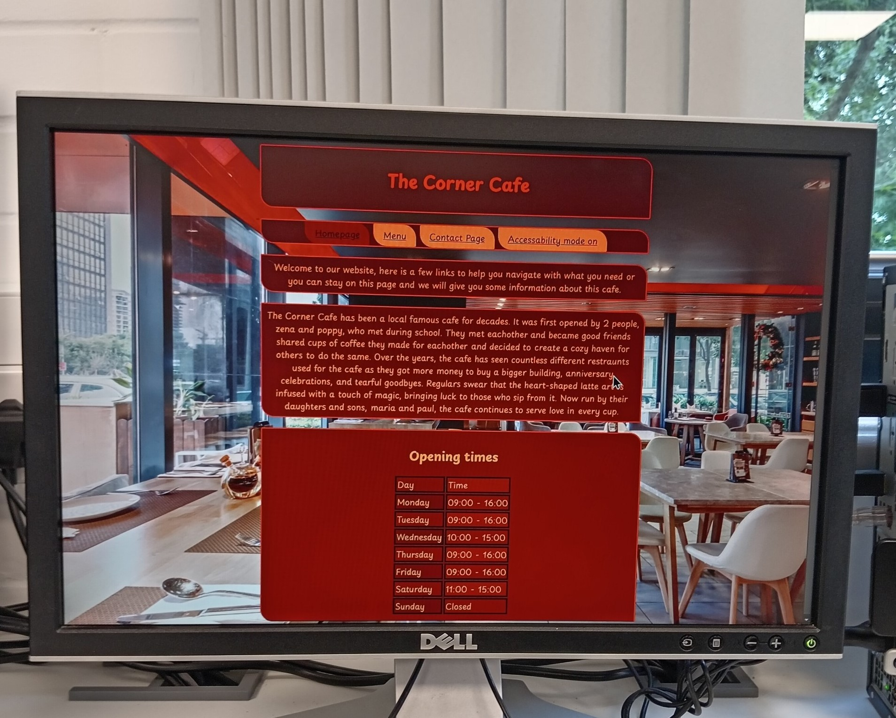

Hi I'm Tyler and this is a page about me and what I do and what I have been doing the past few weeks I will also add some more stuff about myself like my hobbies or something
Recently I have been making a website its probably not going to be published but it’s just a thing ive been doing to see what its like to make a website of something I made it as a coffee shop called the corner café with some made up backstory. In my everyday life I love technology I play xbox a lot and use a lot of electronic devices, I have always been good with technology ive just got the skill of being good at it. In my spare time I play my xbox, I mostly play fortnite, assassins creed valhala or GTA V. My favorite music artist is mainly Juice Wrld but i like some other songs by other people, music for me is a way of being able to relax and escape from reality and it helps me focus better sometimes because i dont get distracted by anything thats happening around me. im also a really quick learner once i start to learn something i catch onto how it works quite quickly, during an open day at dover college i learnt how to take a computer apart and put it back together so i took that skill with me and i then fixed a broken xbox one s and now i use it alot.
This is the website I made I made this using an app called vscode doing this I learnt how to code and make a working website I came across some issues and some struggles but I managed to do it and im happy with it I have even added a accessibility feature to change the colour to the original colours I had
